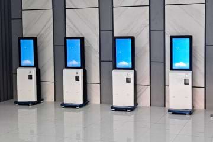
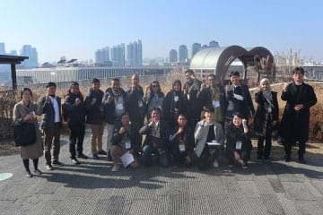

Company Profile
Networks Indonesia Aku (NIA) is a company
that provides services, solutions, and innovative
digital products in the field of Information
Technology specializing in Intelligent Transport
Systems (ITS). NIA was established on
December 10, 2021, as a subsidiary of
Samchully Networks in South Korea, which has
been in operation since 2014.
We create superior digital products and introduce
new innovations through systems and technologies
developed in-house in Korea. By embracing advanced
Korean technology and systems, NIA is
committed to consistently delivering quality in
every innovation.
NIA actively participates in building and
advancing transportation systems, supporting SMEs,
and fostering startup companies in Indonesia. We
strive to create outstanding products and bring
forth a new vision through a systematic strategy
backed by proven technology.
Vision & Mission
Vision
To become a leading IT company in Indonesia with a focus on prioritizing environmentally friendly products and services. Creating technology for the advancement of transportation and infrastructure, technology in the fields of health, education, logistics, smart factories, online payment systems, and their development.
Mision
-
1
To provide computer and digital-based technologies, as well as the development of hardware and software, with a focus on innovative and creative solutions to meet customer needs.
-
2
With a focus on innovation, high-quality service, and advanced technological solutions, we are committed to making a meaningful contribution to advancing the world of information technology. Through this commitment, we strive to build strong, long-term relationships with customers, become a reliable partner, and continue to be a leading provider of IT solutions.
-
3
Committed to being a pioneer in accelerating the growth of the IT industry in Indonesia and realizing a more connected and empowered society.
Core Value
C O N N E C T
Management Philosophy
Technology, Nature, Together
NIA brings together technology and nature to coexist through innovation and a strong commitment to effect positive changes for a better environment and life.
Our History
-

2023
-
11
Received an award from the Ministry of Interior and Safety Republic of Korea as the best ODA implementer 2023
-
10
Completed the "Master Plan Preparation Project and Pilot Operation of Bus Terminal Modernization in Indonesia"
-
09
Organizing the Opening Ceremony "Master Plan Preparation Project and Pilot Operation of Bus Terminal Modernization in Indonesia"
-
07
Carrying out the second invited training in Korea for the Indonesian bus terminal modernization project
Visit the cities of Seoul, Sejong (government complex), Ulsan, Jeonju, Busan (bus terminal complex), etc
-
04
Start the Test Operations at both pilot project terminals (Kp.Rambutan and Leuwipanjang Bus Terminal)
Starting to develop a cargo transportation platform in Indonesia
Carrying out field surveys for the expansion of all Type A Terminals in Indonesia
-
02
Organizing training for each terminal for the Bus Terminal Modernization Pilot Operation in Indonesia
-
01
Begin the "Master Plan Preparation Project and Pilot Operation of Bus Terminal Modernization in Indonesia" in the third year
-
11
-
2022
-
12
Completed the "Master Plan Preparation Project and Pilot Operation of Bus Terminal Modernization in Indonesia" in the second year
Organizing seminars for the promotion and dissemination of the Indonesian bus terminal modernization system
-
11
Carrying out the first invitational training in Korea for the Indonesian bus terminal modernization project
Visit the cities of Seoul, Sejong (government complex), Daejeon (bus terminal complex), etc
-
01
Launched the "Master Plan Preparation Project and Pilot Operation of Bus Terminal Modernization in Indonesia" in the second year
-
12
-

2021
-
12
Completed the "Master Plan Preparation Project and Pilot Operation of Bus Terminal Modernization in Indonesia" in the first year
Established a branch company in Indonesia (Jakarta)
-
08
Initiated the development of 'Healthyhada', “Health Care” an Artificial Intelligence (AI) healthcare platform
-
04
Received the assignment for "Master Plan Preparation Project and Pilot Operation of Bus Terminal Modernization in Indonesia"
(ODA, Ministry of Land, Infrastructure and Transportation)
Inspection and investigation of the Indonesian pilot terminal location (still in progress)
-
02
Launched 'Olligo', a transportation platform in the construction sector
-
12
-
2020
-
12
Selected as "Small Giants" by the Ministry of Manpower
Acquisition of overseas construction business (construction engineering/information and communication construction business)
-
11
Development of 'Olligo', a transportation platform in the construction sector
Launched “24-hour environment”, a transportation system to track waste vehicles in construction
-
08
Opened a branch in Jeju
Inspections and investigations at 100 bus terminals in Indonesia
-
03
Cambodia Phnom Penh bus stop and terminal construction, BIS (Bus Information System) feasibility study
-
12
-
2019
-
12
Registered as KOVA venture capital company (No. 20190729-42348) / Obtained Main Biz certification
Obtained patent: Automatic delivery system (Patent Number: 10-2038395)
-
11
Patent application for location based solutions in information sharing
Development and launch of Samchully PAY platform (commercialization)
-
09
Verification of ITS Ulaanbaatar Mongolia Feasibility Study and Complex Terminal Feasibility Study
-
12
-
 2018
2018
-
11
Established a research institute affiliated with another company (Technical Research Institute No. 2018113469)
-
05
Obtained ISO9001: 18-A-1004 IGC
-
03
Design and development of a cloud-based ticket issuance system
-
11
-
2017
-
03
Opened 25 national transportation agency branches and platforms
-
03
-
2016
-
12
Development and maintenance of a ticketing system for ships hosted by the National Yacht Association
-
08
Development and launch of an integrated intelligent transportation platform (commercialization)
-
12
-
2015
-
10
Design and development of solutions in mobile wireless communications relay (TRS) such as KT and KT Powertel
-
06
Open and operate an integrated transportation call center
-
10
-
2014
-
10
Established Samchully Networks Co., Ltd. (Head Office, in Seoul, Korea)
-
10